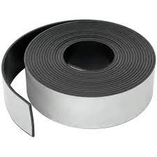

Magnetic tape is a medium for magnetic storage made of a thin, magnetizable coating on a long, narrow strip of plastic film. It was developed in Germany in 1928, based on the earlier magnetic wire recording from Denmark. Devices that use magnetic tape could with relative ease record and playback audio, visual, and binary computer data.Magnetic tape revolutionized sound recording and reproduction and broadcasting. It allowed radio, which had always been broadcast live, to be recorded for later or repeated airing. Since the early 1950s, magnetic tape has been used with computers to store large quantities of data and is still used for backup purposes.
